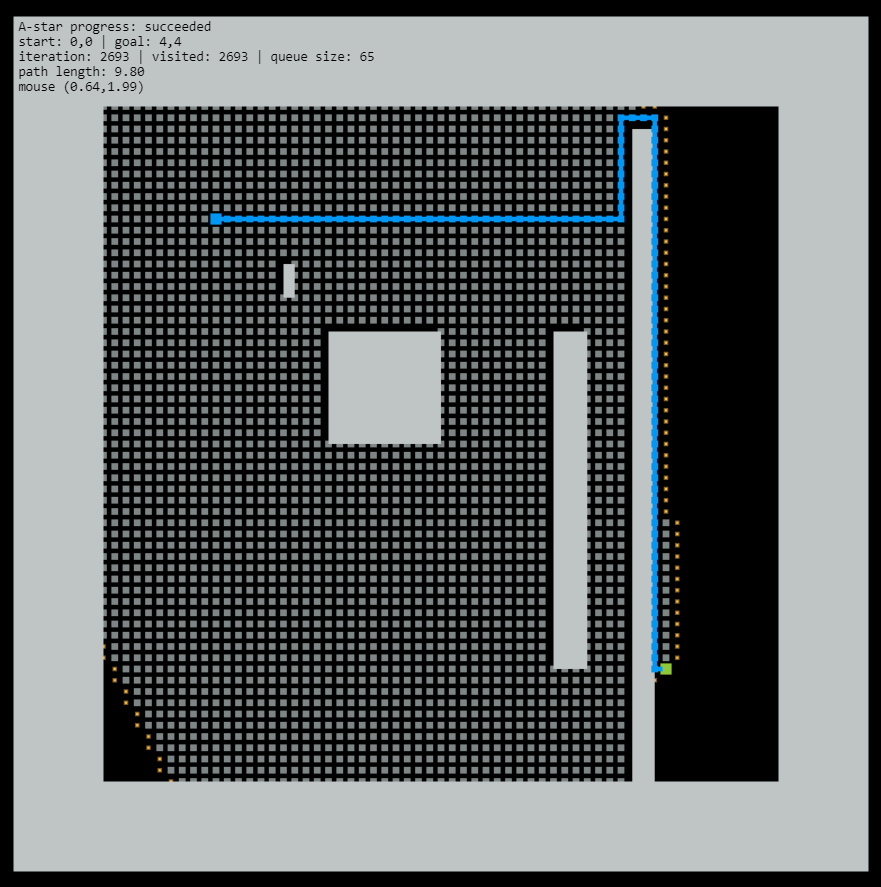

About the algo and our understanding
Figure 1. Path planned using A-star algorithm on 'misc' map.
About the algo and our understanding

Fig>ure 2. Path planned using asdfa on 'empty' map. Search Iterations = xxx, Path length = xxx
Figure 3. Path planned using asdfs on 'narrow1' map. Search Iterations = xxx, Path length = xxx

Figure 4. Path planned using asdf on 'narrow2' map. Search Iterations = xxx, Path length = xxx

Figure 5. Path planned using asdfsdf on 'misc' map. Search Iterations = xxx, Path length = xxx

Figure 6. Path planned using asdf on 'three-sections' map. Search Iterations = xxx, Path length = xxx
result and conclusive decision
About the algo and our understanding

Figure 7. Path planned using Depth First Search on 'empty' map. Search Iterations = xxx, Path length = xxx
Figure 8. Path planned using Depth First Search on 'narrow1' map. Search Iterations = xxx, Path length = xxx

Figure 9. Path planned using Depth First Search on 'narrow2' map. Search Iterations = xxx, Path length = xxx

Figure 10. Path planned using Depth First Search on 'misc' map. Search Iterations = xxx, Path length = xxx

Figure 11. Path planned using Depth First Search on 'three-sections' map. Search Iterations = xxx, Path length = xxx
result and conclusive decision
About the algo and our understanding
Figure 12. Path planned using A-star algorithm on 'empty' map. Search Iterations = xxx, Path length = xxx
Figure 13. Path planned using A-star algorithm on 'narrow1' map. Search Iterations = xxx, Path length = xxx
Figure 14. Path planned using A-star algorithm on 'narrow2' map. Search Iterations = xxx, Path length = xxx
Figure 15. Path planned using A-star algorithm on 'misc' map. Search Iterations = xxx, Path length = xxx

Figure 16. Path planned using A-star algorithm on 'three-sections' map. Search Iterations = xxx, Path length = xxx
result and conclusive decision
About the algo and our understanding
Figure 17. Path planned using Greedy First Search on 'empty' map. Search Iterations = xxx, Path length = xxx

Figure 18. Path planned using Greedy First Search on 'narrow1' map. Search Iterations = xxx, Path length = xxx
Figure 19. Path planned using Greedy First Search on 'narrow2' map. Search Iterations = xxx, Path length = xxx

Figure 20. Path planned using Greedy First Search on 'misc' map. Search Iterations = xxx, Path length = xxx
Figure 21. Path planned using Greedy First Search on 'three-sections' map. Search Iterations = xxx, Path length = xxx
result and conclusive decision